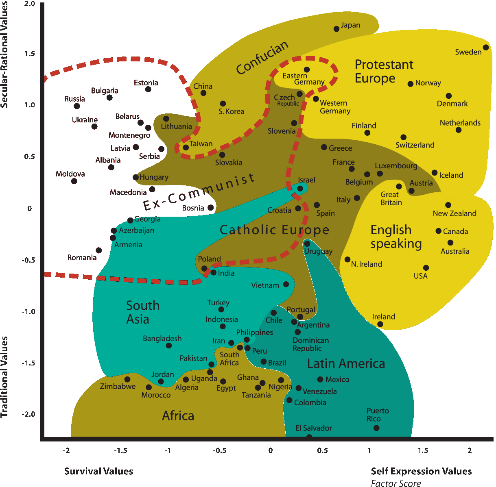
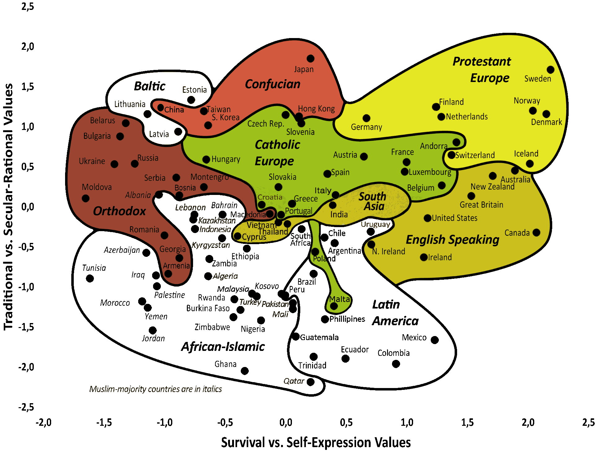

52 Dünya’nın kültürel haritası: Inglehart–Welzel grafiği
Politik bilim insanları Ronald Inglehart ve Christian Welzel tarafından
hazırlanan aşağıdaki grafik, ülkeleri öncelik verdikleri değerlere
göre iki boyutlu bir haritaya yerleştiriyor. 1981’den beri 100’e
yakın ülkede dünyadaki değerler üzerine yapılan anketler
dizisi
(World Values Survey) ile elde edilmiş bu veriler sayesinde hazırlanan bu
grafikten çıkan asıl sonuç, coğrafi olarak dipdibe olmasına rağmen
kültürel olarak ülkeler arasında büyük ayrımların olması, ülkelerin
kültürel olarak değer atfedilebilecek anlamlı birimler olduğuna işaret
ediyor.
Haritanın iki versiyonu var, daha doğrusu aynı harita iki defa hazırlanmış,
bir 2008’de bir de 2017’de. İkisinde de eksenler aynı, ve açıklaması şu
şekilde:
- Dikey eksen geleneksel fikirlere bağlılığı ölçüyor. Din, aile yapısı,
devlete bağlılık gibi konularda bir kültür ne kadar geleneksel
değerler üzerine kuruluysa aşağıda, ne kadar mantık ve açık
görüşlülük üzerine kuruluysa yukarıda yer alıyor. Örneğin,
dikey eksende yukarıya doğru çıkıldıkça boşanma ve çocuk
aldırma o kültürde daha normal/kabul edilebilir oluyor.
- Yatay eksen fiziksel ve ekonomik güvenliğin özgürlüklere göre
ne kadar öncelikli olduğunu ölçüyor. Yatay eksen boyunca
sağa doğru ilerledikçe o kültürde hayat kalitesinin önceliği,
ifade özgürlüğü, ve farklı olanlara hoşgörü daha ön plana
çıkıyor. Aslında Türkiye’deki popüler bir dil ile bunu ifade etmek
istersek, yatay eksende sola gittikçe devlet bekasını daha fazla ön
plana çıkarmış oluyoruz, bu da o kültürdeki insanlar gözünde
azınlıklara baskı yapılmasını ya da ifade özgürlüğünün
kısıtlanmasını meşru kılıyor: sonuçta bütün bunlar, o insanlara
göre, devletin güvenliği için yapılıyor ve o insanlar için güvenlik
özgürlükten daha önemli.
Grafiğin 2008 hali bu:

2017 hali de şu:
